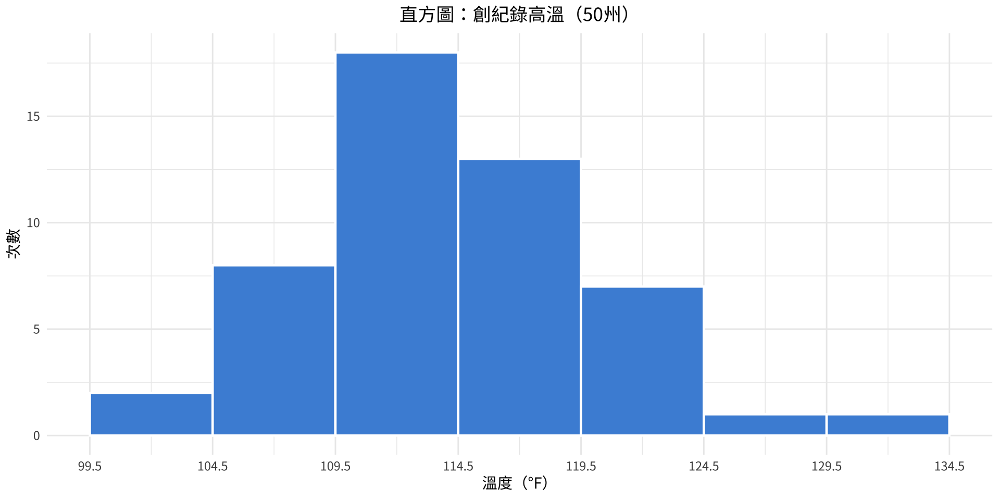
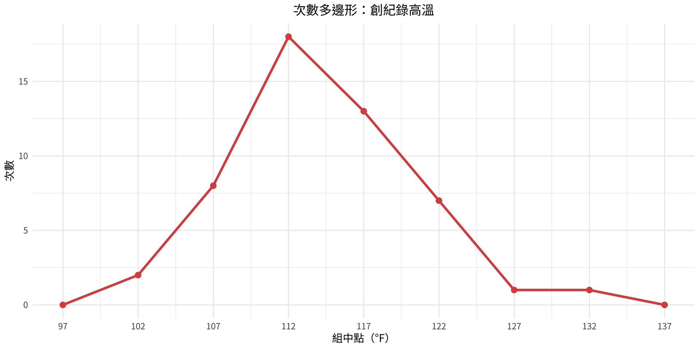
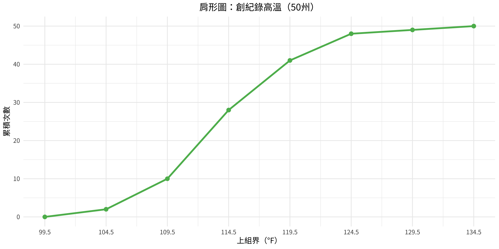
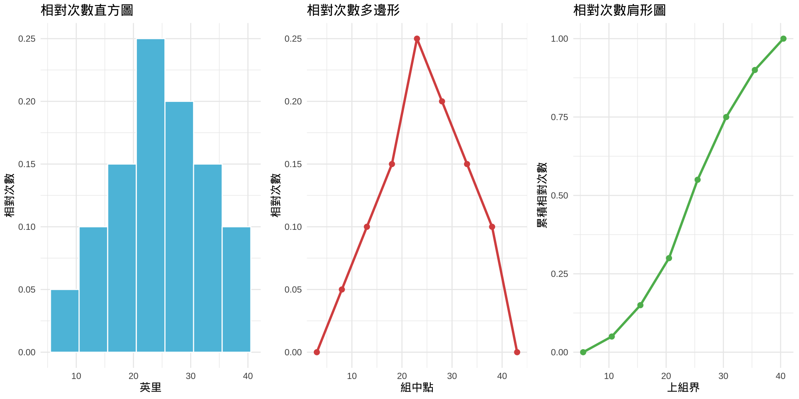
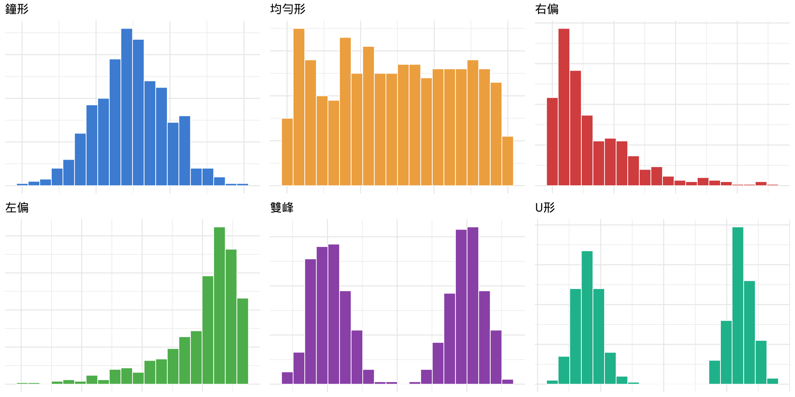
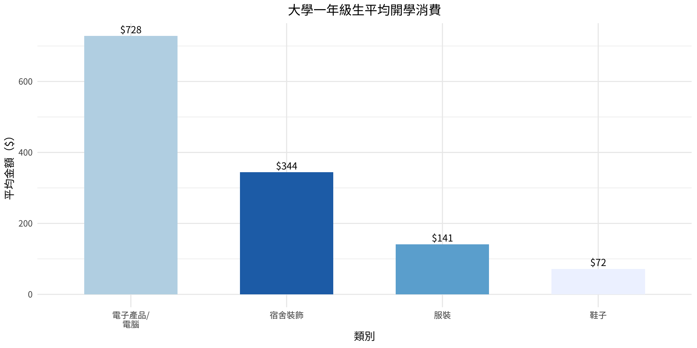
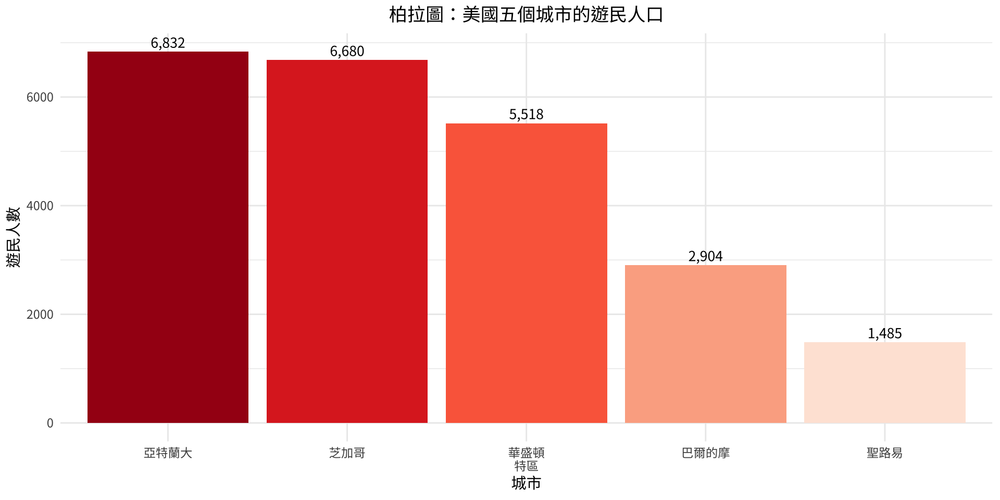
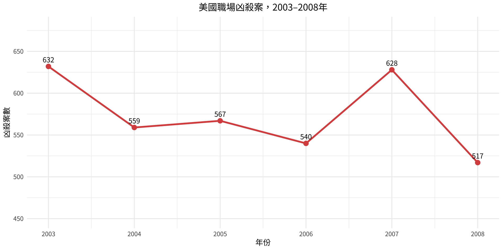
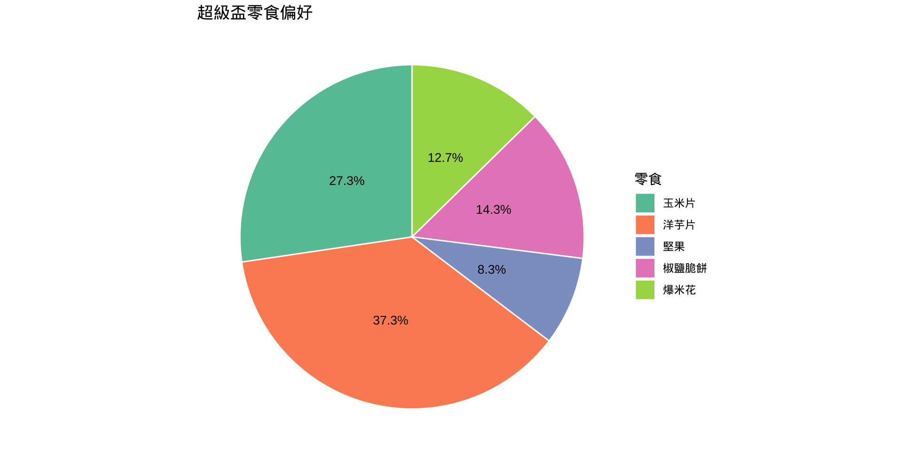
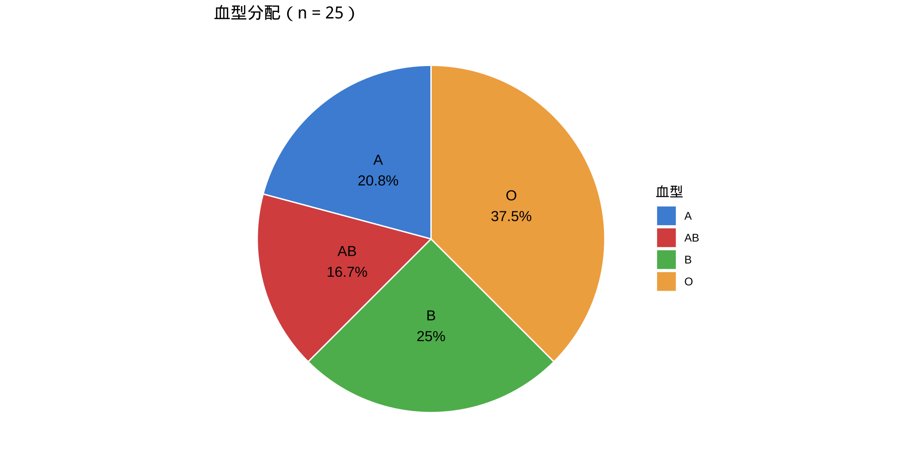

| Class | Frequency | Percentage |
|---|---|---|
| A | 5 | 20 |
| AB | 4 | 16 |
| B | 7 | 28 |
| O | 9 | 36 |
統計學
第2章：次數分配與圖形
劉昱佑
實踐大學
2026-08-03
本章概覽
第2章介紹組織與視覺化資料的方法——從原始、未排序的觀測值，轉化為能呈現規律的結構化摘要。
| 節次 | 主題 |
|---|---|
| 2-1 | 次數分配：類別、分組、未分組、累積 |
| 2-2 | 直方圖、次數多邊形與肩形圖 |
| 2-3 | 長條圖、柏拉圖、時間序列圖、圓形圖、莖葉圖 |
第2-1節：資料的組織
從原始資料到有組織的資訊
資料初次收集時，以原始形式存在——一份未排序、未處理的數值清單。原始資料本身幾乎無法揭示資料集中潛在的規律或趨勢。
將資料整理成次數分配，能提供結構化摘要，使規律可見，分析更易進行。
次數分配
次數分配是一種表格，將資料值（或數值範圍）與各值或範圍在資料集中出現的次數一起列出。
類別次數分配
當資料由質性類別（非數字的標籤或群組）組成時，使用類別次數分配。每個類別與其次數及相對次數（百分比）並列。
建立類別次數分配的步驟：
- 列出每個不同的類別。
- 統計每個類別的出現次數。
- 記錄次數並計算百分比：\% = \frac{f}{n} \times 100
範例 2-1
陸軍新兵的血型
對25名陸軍新兵進行血型測試，結果如下所示。將資料整理成類別次數分配。
A B B AB O
O O B AB B
B B O A O
A O O O AB
AB A O B A範例 2-1
解題
解題
範例 2-1
解題
詮釋
次數分配顯示，O型血是此樣本中最常見的血型，出現9次（36%）。A型出現5次（20%），B型出現7次（28%），AB型出現4次（16%）。
分組次數分配
處理涵蓋大範圍值的量化資料時，個別數值會被分組到組（區間）中。所得表格稱為分組次數分配。
關鍵術語：
- 組限：可歸屬於某組的最小（下限）與最大（上限）數值。
- 組界：相鄰兩組上限與下限之間的中間值，用於消除組間空隙。
- 組距：相鄰下組限（或上組界）之差。
- 組中點：X_m = \dfrac{\text{下限} + \text{上限}}{2}
建立分組次數分配的規則
六大建立原則
- 使用5到20組——足以呈現規律，又不過於繁瑣。
- 組距盡量為奇數，使組中點為整數。
- 各組須互斥——每個資料值僅屬於一組。
- 各組須連續——組間無空隙，即使某組次數為零。
- 各組須窮盡——每個資料值都能歸入某組。
- 各組寬度應相等（首末組可例外）。
公式：\text{組距} \approx \dfrac{\text{最大值} - \text{最小值}}{\text{組數}}
範例 2-2
創紀錄高溫
以下列出美國50個州的創紀錄高溫（^\circF）。使用7組建立分組次數分配。
112 100 127 120 134 118 105 110 109 112
110 118 117 116 118 122 114 114 105 109
107 112 114 115 118 117 118 122 106 110
116 108 110 121 113 120 119 111 104 111
120 113 120 117 105 110 118 112 114 114範例 2-2
解題
解題
準備資料
建立次數分配表
# 組距 = ceiling((134 - 100) / 7) = 5
breaks <- seq(99.5, 134.5, by = 5)
labels <- c("100-104","105-109","110-114","115-119","120-124","125-129","130-134")
freq_table <- data.frame(temps) |>
mutate(Class = cut(temps, breaks = breaks, labels = labels)) |>
count(Class, .drop = FALSE) |>
rename(Frequency = n) |>
mutate(
Boundaries = c("99.5-104.5","104.5-109.5","109.5-114.5",
"114.5-119.5","119.5-124.5","124.5-129.5","129.5-134.5"),
Midpoint = seq(102, 132, by = 5),
Cumulative = cumsum(Frequency)
)輸出結果
| Class | Boundaries | Midpoint | Frequency | Cumulative |
|---|---|---|---|---|
| 100-104 | 99.5-104.5 | 102 | 2 | 2 |
| 105-109 | 104.5-109.5 | 107 | 8 | 10 |
| 110-114 | 109.5-114.5 | 112 | 18 | 28 |
| 115-119 | 114.5-119.5 | 117 | 13 | 41 |
| 120-124 | 119.5-124.5 | 122 | 7 | 48 |
| 125-129 | 124.5-129.5 | 127 | 1 | 49 |
| 130-134 | 129.5-134.5 | 132 | 1 | 50 |
範例 2-2
未分組次數分配
當數值範圍很小，且每個不同值本身即具有意義時，使用未分組（單值）次數分配，將每個個別資料值列為單獨一組。
此方法保留精確數值，而非將其合併為區間。
範例 2-3
休旅車每加侖行駛英里數
以下列出30輛運動型多功能車（SUV）樣本的油耗（每加侖英里數）。建立未分組次數分配。
12 17 12 14 16 18 16 18 12 16
15 15 16 12 15 15 16 16 12 14
15 12 15 15 12 16 15 16 16 12範例 2-3
解題
解題
準備資料
視覺化
輸出結果
| MPG | Frequency | Rel. Freq. | Cum. Freq. |
|---|---|---|---|
| 12 | 8 | 0.267 | 8 |
| 14 | 2 | 0.067 | 10 |
| 15 | 8 | 0.267 | 18 |
| 16 | 9 | 0.300 | 27 |
| 17 | 1 | 0.033 | 28 |
| 18 | 2 | 0.067 | 30 |
分配顯示，15英里/加侖與16英里/加侖是本樣本中最常見的油耗評等。
累積次數分配
累積次數分配顯示從最低組到每個連續組的次數累加總計。它回答了以下問題：「有多少觀測值落在此數值或以下？」
第2-2節：直方圖、次數多邊形與肩形圖
分組次數分配的圖形化
三種基本圖形用於視覺化分組次數分配中的資料：
- 直方圖——以長條的高度表示次數（或相對次數），長條間無間隔。
- 次數多邊形——折線圖，連接各組組中點所對應的次數點；兩端延伸至橫軸。
- 肩形圖（累積次數圖）——顯示觀測值累加總計到每個組界的折線圖。
直方圖
直方圖
直方圖是一種長條圖，橫軸表示組界，縱軸表示次數（或相對次數）。相鄰長條共用邊界——無間隔。
範例 2-4
創紀錄高溫的直方圖
使用範例 2-2的次數分配，繪製美國50州創紀錄高溫的直方圖。
R 程式

次數多邊形
次數多邊形
次數多邊形是折線圖，連接各直方圖長條頂端的組中點。折線在兩端延伸至距各端一個組距的橫軸位置，使多邊形「封閉」。
範例 2-5
次數多邊形
使用範例 2-2的創紀錄高溫資料，繪製次數多邊形。
R 程式

肩形圖
肩形圖
肩形圖（累積次數圖）以橫軸的上組界對應縱軸的累積次數繪製。可用於判斷有多少觀測值落在某特定數值以下。
範例 2-6
創紀錄高溫的肩形圖
使用範例 2-2的創紀錄高溫分配，繪製肩形圖。
R 程式

相對次數圖
三種圖形（直方圖、次數多邊形、肩形圖）均可改用相對次數（比例或百分比）重新繪製，取代原始次數。圖形形狀相同，但縱軸反映的是佔總觀測值的比例，而非計數。
相對次數圖便於比較不同樣本大小的資料集。
範例 2-7
相對次數圖——每週跑步英里數
調查20名跑者，記錄每人每週跑步英里數。資料整理成如下次數分配。繪製相對次數直方圖、次數多邊形與肩形圖。
| 組別 | 次數 |
|---|---|
| 5.5–10.5 | 1 |
| 10.5–15.5 | 2 |
| 15.5–20.5 | 3 |
| 20.5–25.5 | 5 |
| 25.5–30.5 | 4 |
| 30.5–35.5 | 3 |
| 35.5–40.5 | 2 |
範例 2-7
視覺化
p1 <- ggplot(run_df, aes(x = mid, y = rel_f)) +
geom_bar(stat = "identity", width = 5, fill = "#5bc0de", color = "white") +
labs(title = "相對次數直方圖", x = "英里", y = "相對次數") +
theme_minimal(base_size = 10)
p2 <- ggplot(
data.frame(x = c(3, run_df$mid, 43), y = c(0, run_df$rel_f, 0)),
aes(x, y)
) +
geom_line(color = "#d9534f", linewidth = 1) +
geom_point(color = "#d9534f", size = 2) +
labs(title = "相對次數多邊形", x = "組中點", y = "相對次數") +
theme_minimal(base_size = 10)視覺化
輸出結果

分配的形狀
分配的整體形狀描述資料值如何分散於範圍內。辨識形狀有助於選擇適當的統計方法。
| 形狀 | 說明 |
|---|---|
| 鐘形 | 對稱，中央有單一峰；兩側均勻漸減 |
| 均勻形 | 平坦；所有值出現頻率大致相等 |
| 右偏 | 尾部延伸至右側；大多數資料集中在左側 |
| 左偏 | 尾部延伸至左側；大多數資料集中在右側 |
| J形 | 次數從左到右穩定增加 |
| 反J形 | 次數從左到右穩定減少 |
| 雙峰 | 兩個明顯的峰；可能表示資料中有兩個子群組 |
| U形 | 兩端次數高，中間次數低 |
視覺化分配形狀
p_bell <- make_hist(rnorm(500, 50, 10), "鐘形", "#4a90d9")
p_uni <- make_hist(runif(500, 20, 80), "均勻形", "#f0ad4e")
p_right <- make_hist(rexp(500, 0.05), "右偏", "#d9534f")
p_left <- make_hist(80 - rexp(500, 0.05), "左偏", "#5cb85c")
p_bimod <- make_hist(c(rnorm(250,30,5), rnorm(250,70,5)), "雙峰", "#9b59b6")
p_u <- make_hist(c(rnorm(200,20,5), rnorm(200,80,5)), "U形", "#1abc9c")
第2-3節：其他圖形類型
超越直方圖
除了直方圖、次數多邊形和肩形圖之外，統計學與日常資料溝通中廣泛使用其他幾種圖形工具：
- 長條圖——用於比較類別資料的次數
- 柏拉圖——長條依次數從高到低排列的長條圖
- 時間序列圖——用於追蹤變數隨時間的變化
- 圓形圖——顯示各類別佔整體比例
- 莖葉圖——以圖形形式顯示實際資料值
長條圖
長條圖
長條圖使用水平或垂直長條表示類別（質性）資料。每條長條的長度或高度對應該類別的次數或數值。與直方圖不同，長條間允許有間隔。
範例 2-8
大學一年級生的消費
一項針對大學一年級生的調查報告了四個開學採購類別的平均消費。以長條圖呈現資料。
| 類別 | 平均消費 |
|---|---|
| 電子產品/電腦 | $728 |
| 宿舍裝飾 | $344 |
| 服裝 | $141 |
| 鞋子 | $72 |
範例 2-8
ggplot(spending, aes(x = reorder(category, -amount), y = amount, fill = category)) +
geom_bar(stat = "identity", show.legend = FALSE, width = 0.6) +
geom_text(aes(label = paste0("$", amount)), vjust = -0.4, size = 3.5) +
scale_fill_brewer(palette = "Blues", direction = -1) +
labs(title = "大學一年級生平均開學消費",
x = "類別", y = "平均金額（$）")
柏拉圖
柏拉圖
柏拉圖是一種特殊長條圖，其中類別依次數由高到低排列。特別適用於識別哪些類別佔總體最大比例——這是品質管理與決策中的關鍵概念。
此名稱源自Vilfredo Pareto，他觀察到少數原因往往造成大多數影響（「80/20法則」）。
範例 2-9
五個城市的遊民人口
以下為美國五個城市的估計遊民人數。建立柏拉圖。
| 城市 | 人數 |
|---|---|
| 亞特蘭大 | 6,832 |
| 芝加哥 | 6,680 |
| 華盛頓特區 | 5,518 |
| 巴爾的摩 | 2,904 |
| 聖路易 | 1,485 |
範例 2-9

時間序列圖
時間序列圖
時間序列圖以縱軸表示量化變數，橫軸表示時間，繪製資料點並用線段連接，以強調隨時間的趨勢或規律。
範例 2-10
職場凶殺案（2003–2008）
以下為美國2003至2008年間報告的職場凶殺案數量。繪製時間序列圖並描述趨勢。
| 年份 | 2003 | 2004 | 2005 | 2006 | 2007 | 2008 |
|---|---|---|---|---|---|---|
| 凶殺案數 | 632 | 559 | 567 | 540 | 628 | 517 |
範例 2-10
解題
解題
homicides <- data.frame(
year = 2003:2008,
count = c(632, 559, 567, 540, 628, 517)
)
fig <- ggplot(homicides, aes(x = year, y = count)) +
geom_line(color = "#d9534f", linewidth = 1.2) +
geom_point(color = "#d9534f", size = 3) +
geom_text(aes(label = count), vjust = -0.8, size = 3.5) +
scale_x_continuous(breaks = 2003:2008) +
ylim(450, 680) +
labs(title = "美國職場凶殺案，2003–2008年",
x = "年份", y = "凶殺案數")
整體趨勢顯示，此期間職場凶殺案呈整體下降，2007年出現明顯高峰。
圓形圖
圓形圖
圓形圖（餅圖）是一個分成若干扇形的圓，每個扇形代表一個類別。每個扇形的大小與該類別佔總體的比例成正比。
扇形角度公式： \text{角度} = \frac{f}{n} \times 360^\circ
其中 f 為類別次數，n 為觀測值總數。
範例 2-11
超級盃零食偏好
一項超級盃觀賞者調查記錄其喜愛的零食。建立圓形圖。
| 零食 | 次數 |
|---|---|
| 洋芋片 | 1,120萬 |
| 玉米片 | 820萬 |
| 椒鹽脆餅 | 430萬 |
| 爆米花 | 380萬 |
| 堅果 | 250萬 |
範例 2-11
解題
解題
snacks <- data.frame(
item = c("洋芋片","玉米片","椒鹽脆餅","爆米花","堅果"),
freq = c(11.2, 8.2, 4.3, 3.8, 2.5)
) |>
mutate(
pct = freq / sum(freq) * 100,
label = paste0(item, "\n", round(pct, 1), "%")
)
fig <- ggplot(snacks, aes(x = "", y = freq, fill = item)) +
geom_bar(stat = "identity", width = 1, color = "white") +
coord_polar(theta = "y") +
geom_text(aes(label = paste0(round(pct, 1), "%")),
position = position_stack(vjust = 0.5), size = 3.5) +
scale_fill_brewer(palette = "Set2") +
labs(title = "超級盃零食偏好", fill = "零食") +
theme_void()
範例 2-12
血型圓形圖
使用範例 2-1的血型資料，建立圓形圖。
範例 2-12
解題
R 程式
blood_pie <- data.frame(
type = c("A","B","O","AB"),
freq = c(5, 7, 9, 4)
) |>
mutate(
pct = freq / sum(freq) * 100,
deg = pct / 100 * 360,
label = paste0(type, "\n", freq, " (", round(pct, 1), "%)")
)
fig <- ggplot(blood_pie, aes(x = "", y = freq, fill = type)) +
geom_bar(stat = "identity", width = 1, color = "white") +
coord_polar(theta = "y") +
geom_text(aes(label = paste0(type, "\n", round(pct, 1), "%")),
position = position_stack(vjust = 0.5), size = 4) +
scale_fill_manual(values = c("#4a90d9","#d9534f","#5cb85c","#f0ad4e")) +
labs(title = "血型分配（n = 25）", fill = "血型") +
theme_void()
誤導性圖形
注意：圖形可能產生誤導
圖形是強大的溝通工具，但可能扭曲認知。常見的誤導手法包括：
- 截斷縱軸——縱軸起點不從零開始，誇大長條或資料點之間的差異。
- 以二維圖像呈現一維變化——視覺比較的是面積而非高度，使微小差異看起來很顯著。
- 省略座標軸標籤或單位——縱軸無標籤時，無法判斷差異的實際幅度。
從圖形得出結論前，務必仔細檢查刻度與標籤。
莖葉圖
莖葉圖
莖葉圖將每個數值分成莖（前導位數）和葉（末尾位數）來組織資料。此技術保留實際資料值，同時以圖形形式展示，揭示分配的形狀。
- 每列代表一個莖（類別）。
- 每列中的葉依升序排列。
- 此圖類似於橫置的直方圖。
範例 2-13
門診中心的心電圖次數
以下記錄一家門診測試中心20天內每天進行的心電圖次數。建立莖葉圖。
25 31 20 32 13
14 43 02 57 23
36 32 33 32 44
32 52 44 51 45範例 2-13
範例 2-14
汽車竊盜——帶有組別的莖葉圖
一名保險研究員記錄某城市30天內的汽車竊盜次數。使用50–54、55–59、60–64、65–69、70–74、75–79等組別建立莖葉圖。
52 62 51 50 69 58 77 66 53 57
75 56 55 67 73 79 59 68 65 72
57 51 63 69 75 65 53 78 66 55範例 2-14
背對背莖葉圖
背對背莖葉圖
比較兩個相關群組時，背對背莖葉圖在中央共用一列莖，一個群組的葉向左展開，另一個向右展開。這便於同時比較兩個分配的形狀、中心與離散程度。
範例 2-15
亞特蘭大與費城的高樓
以下為亞特蘭大與費城高樓樣本的樓層數。建立背對背莖葉圖並比較兩個分配。
亞特蘭大： 55, 70, 44, 36, 40, 63, 40, 44, 34, 38, 60, 47, 52, 32, 32, 50, 53, 32, 28, 31, 52, 32, 34, 32, 50, 26, 29
費城： 61, 40, 38, 32, 30, 58, 40, 40, 25, 30, 54, 40, 36, 30, 30, 53, 39, 36, 34, 33, 50, 38, 36, 39, 32
範例 2-15
解題
解題
atlanta <- c(55,70,44,36,40,63,40,44,34,38,60,47,52,32,32,
50,53,32,28,31,52,32,34,32,50,26,29)
philly <- c(61,40,38,32,30,58,40,40,25,30,54,40,36,30,30,
53,39,36,34,33,50,38,36,39,32)
# Base-R back-to-back stem and leaf display (no extra packages needed):
# left-group leaves fan out to the left, right-group leaves to the right.
back_to_back <- function(left, right, lab_left, lab_right) {
stems <- seq(min(c(left, right)) %/% 10, max(c(left, right)) %/% 10)
lf <- sapply(stems, function(s)
paste(sort(left[left %/% 10 == s] %% 10, decreasing = TRUE), collapse = " "))
rf <- sapply(stems, function(s)
paste(sort(right[right %/% 10 == s] %% 10), collapse = " "))
w <- max(nchar(c(lf, lab_left)))
cat(sprintf("%*s | stem | %s", w, lab_left, lab_right), sep = "\n")
cat(sprintf("%*s | %d | %s", w, lf, stems, rf), sep = "\n")
}
back_to_back(atlanta, philly, "Atlanta", "Philadelphia") Atlanta | stem | Philadelphia
9 8 6 | 2 | 5
8 6 4 4 2 2 2 2 2 1 | 3 | 0 0 0 0 2 2 3 4 6 6 6 8 8 9 9
7 4 4 0 0 | 4 | 0 0 0 0
5 3 2 2 0 0 | 5 | 0 3 4 8
3 0 | 6 | 1
0 | 7 | 範例 2-15
解題
詮釋
檢視背對背圖可發現幾個關鍵差異：
- 兩個分配均在30層樓範圍達到高峰，意味著這是兩個城市中最常見的樓高組別。
- 亞特蘭大顯示出更大的變異性——其建築範圍從20層上下一直到70層。
- 費城建築更集中於30至50層範圍。
- 亞特蘭大有更多40層以上的建築，顯示在此樣本中天際線略高。
摘要
| 圖形類型 | 最適用於 |
|---|---|
| 直方圖 | 連續/分組量化資料 |
| 次數多邊形 | 比較次數分配 |
| 肩形圖 | 確定低於某臨界值的數值數量 |
| 長條圖 | 比較類別（名目/序位資料） |
| 柏拉圖 | 依次數由多到少排列類別 |
| 時間序列圖 | 追蹤變數隨時間的變化 |
| 圓形圖 | 顯示各類別佔整體的比例 |
| 莖葉圖 | 顯示實際資料值；適合中小型資料集 |
關鍵公式——第2章
重要公式
\text{組距} \approx \frac{\text{最大值} - \text{最小值}}{\text{組數}}
X_m = \frac{\text{下限} + \text{上限}}{2} \quad \text{（組中點）}
\% = \frac{f}{n} \times 100 \quad \text{（各組百分比）}
\text{角度} = \frac{f}{n} \times 360^\circ \quad \text{（圓形圖扇形）}
重點整理
- 原始資料——收集後尚未處理的未組織觀測值
- 次數分配——將資料值/組別與其計數配對的表格
- 組限／組界／組中點／組距——分組分配的結構組成
- 累積次數——截至某組（含）的次數累加總計
- 直方圖／次數多邊形／肩形圖——三種標準分配圖
- 長條圖／柏拉圖／時間序列圖／圓形圖——質性或時間資料的圖形
- 莖葉圖——以圖形形式保留個別數值的資料展示
- 分配形狀——次數分配的整體規律（對稱、偏斜、雙峰等）
Acknowledgement
Copyright notice. These teaching materials have been adapted from Bluman, A. G. (2012). Elementary statistics: A step by step approach (8th ed.). McGraw-Hill. All rights are reserved by the original authors and publishers.
Non-commercial use only. These materials are strictly intended for educational purposes and must not be used for commercial gain or profit.
Proper attribution. Any reproduction, distribution, or use of these materials must provide proper attribution to the original source.

Elementary Statistics: A Step by Step Approach